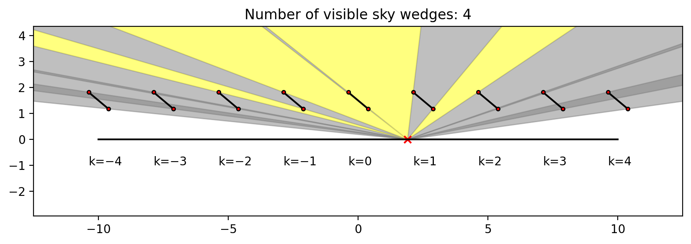
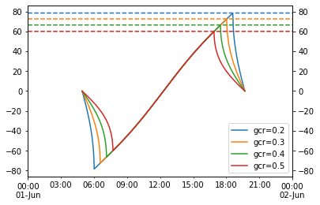

Posts tagged photovoltaics
PSM3 Pixel Boundaries
- 2022-09-04
The PSM3 provides data with a nominal 2 km spatial resolution, at least according to the NSRDB website. I am interested in what the real underlying data grid actually looks like; this notebook shows that the real grid is defined by angular extent (regular in latitude/longitude), not spatial extent.
Before getting started – querying 5-minute PSM3 data is a bit slow, and likely I’ll want to re-run cells here as I tweak the notebook, so let’s cache the requests to speed things up.

OpenGL Compute Shaders: SPA
- 2022-08-21
This notebook is the third in a series of notebooks about general-purpose GPU (GPGPU) computing using OpenGL’s compute shaders with the goal of an accurate and fast GPU implementation of Reda & Andreas’s Solar Position Algorithm. There’s still some work to do, but what I have is already useful in many contexts and as I get close to the finish line I wanted to do some more rigorous validation in terms of accuracy and runtime speed, using pvlib’s numpy and numba implementations as the baseline.
These comparisons (both error and runtime) will be specific to this particular GPU. I will be interested to see how the results vary across devices…

Speeding up pvfactors
- 2022-04-09
This post is an example of identifying bottlenecks in numerical python code and benchmarking possible alternatives. Specifically, it shows some of the timings I did for the SunPower/pvfactors#140 pull request to the pvfactors bifacial PV simulation package.
The function of interest is pvfactors.engine.PVEngine.run_full_mode, which (as of pvfactors version 1.5.2) doesn’t run as fast as I’d like it to run, especially for large simulations (many PV rows and many timestamps).

Ground-to-sky viewfactor
- 2021-12-29
This post shows two things:
How to calculate, in an infinite sheds model, the view factor to the sky from a point underneath the array
Single-axis tracking: GCR vs max angle
- 2021-09-30
Single-axis tracker rotation angles are commonly limited by the hardware’s maximum allowed rotation (45 and 60 degrees are common limits). For arrays with backtracking activated, the time spent at max angle depends on GCR: the higher the GCR, the more the array backtracks, and the less time it spends at max angle. So at some sufficiently large GCR the array will just touch max angle for an instant before it starts backtracking. I don’t have a situation in mind for when this might be useful, but it seemed like a fun math problem to determine that boundary GCR.
The approach here is focused on the point on the tracking curve when backtracking is about to begin, as that represents the maximum realized angle of the tracker. We start with Equation 14 from NREL Technical Report 76626 (PDF):
Seasonal tilt optimization
- 2021-09-27
Playing around with optimizing the tilt of a south-facing adjustable-tilt collector to maximize total insolation capture.
Normal fixed tilt – no seasonal changes

Daily EIA Data
- 2021-08-11
I found an EIA tool that reported the daily net generation breakdown for the lower 48. I didn’t check if its API endpoint is documented anywhere (who needs documentation when web browsers come with built-in developer tools?) but it’s pretty straightforward and I played around with the data a bit. Its monthly sums more or less match the generation numbers in Table 7.2b (see this page), although there are some small differences, maybe because of excluding Hawaii and Alaska? Unfortunately it doesn’t seem to report any data prior to 2018-07-01.
Grab the entire dataset:

Comparing PSM3 and MERRA2 GHI
- 2021-08-03
MERRA2 is a global weather reanalysis dataset providing, among other things, hourly GHI data. I’m not very familiar with MERRA2 and wanted to do a quick comparison with PSM3 (which I am quite familiar with) just to get a rough handle on how the two datasets compare when it comes to irradiance data.
Important notes if you want to run this notebook yourself:

T_cell_typ_avg
- 2021-06-17
This is a short note that derives the “typical average cell temperature” used in the “Weather-Corrected Performance Ratio”. The Weather-Corrected Performance Ratio 1 is defined as:
The denominator is essentially the PVWatts DC model, except the reference cell temperature is not \(T_{\mathrm{STC}}\) but rather a “typical/average” cell temperature. The report has this to say about that decision:
PVWatts and PVUSA
- 2020-02-01
I read a paper recently that turned on a lightbulb about why the PVUSA/ASTM E2848-13 equation is defined the way it is. To quote the paper 1:
The concept of modeling power by modeling current and voltage separately (other than IV-curve modeling, of course) is obvious in hindsight but had never occurred to me before… so let’s have some fun and try it out!